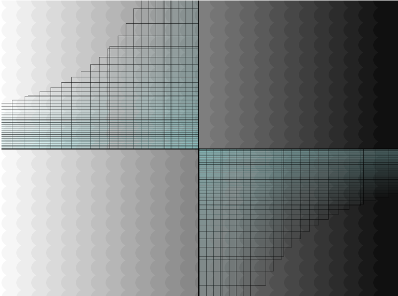

envisioning cotangent:
Using a for loop, the background of this project is a series of ellipses gradienting from color values of 255 to 0 (left to right). Another for loop reacts with the mouse; movement in the x direcion expands a tangent curve and movement in the y direction expands a cotangent curve.
an interactive story:
This project uses if/else if statements in addition to a random generator to create different sentences with every mouse click. It also engages the up and down arrow keys to move two levers and change the color scheme of the image.

create a landscape:
For my final project, I used a for loop and noise on a horizontal line to create the illusion of mountains. You can interact with the y-value of the line to adjust height and alter the colors of the foreground and background for a personalized experience.